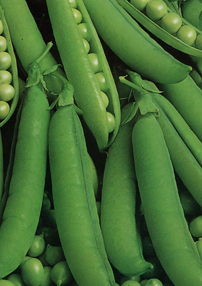

Ært
Pisum Sativum 'Alderman'
Type: Marvært
Højde: 180 cm
Såafstand: 6 cm
Rækkeafstand: 80 cm
Sådybde: 3 cm
Lysforhold: Fuld sol
Forspiring: Marts April
Udplantning/såning på friland: Maj Juni
Spiring efter: ca. 7 dage
Moden til høst efter: ca. 91 dage
Beskrivelse:
Herlig, god marvært der giver 7-10 ærter/bælg. En høj sort som kræver støtte, giver rigeligt udbytte på et lille areal. Giver udbytte i en lang periode. Velegnet til frysning. Noget sødere i smagen end normal marvært, men kan ikke sås lige så tidligt om foråret. Trives i porøs jord, men er ganske nøjsom. Vandes ved tørke. Dyrk ærter forskellige steder i køkkenhaven hvert år. De gøder jorden.
Frilandssåning: Når jorden er mindst 10°C varm, ellers rådner frøene. Vand sårillen før såning. Hold såningen fugtig, til frøene er spiret.